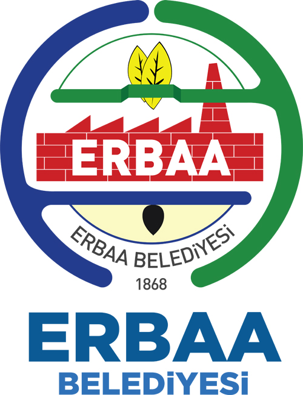

ERBAA
ERBAA
Erbaa, Tokat ilinin Şubat 2021'de yayınlanan 2020 sonu ADNKS kayıtlarına göre 70.030 ilçe merkezi, 98.342 toplam nüfus ile hem ilçe merkez nüfusu hem de köylerle birlikte toplam nüfus bakımından Tokat'ın en büyük ilçesi olan; bereketli Erbaa Ovası, konumu, iş olanakları, sanayisi ve OSB gibi önemli etkenler sayesinde göç almaya devam eden bölgenin cazibe merkezi olmuş bir ilçesidir.
KÖKEN BİLİMİ
Erbaa kelimesi, Arapça olup "dört" anlamına gelmektedir. Osmanlı İmparatorluğu kayıtlarında ise 18. yüzyılın başlarından itibaren Erbaa adının kullanıldığı görülmektedir. Bir ara bu kelime "Nevahi-i Erbaa" şeklinde kullanılmıştır. Mevzubahis dönemde Niksar-Amasya arasında en önemli yerleşim birimleri; Erek, Karayaka, Sonusa ve Taşâbat idi. Nüfus yönünden ancak birer nahiye büyüklüğünde ve aynı bölgede olmalarından hepsine birden Nevahi-i Erbaa yani "dört nahiye" denilmiştir. Hatta tahakkuk eden vergiler de bu isimle kaydedilmiştir. H.1256/M. 1840'ta, Erbaa adıyla bu dört nahiyenin (Erek, Karayaka, Sonusa, Taşâbat) vergisi 47.243 kuruş olarak resmi evraka geçmiştir.
Buna göre Erbaa; Erek, Karayaka, Sonusa ve Taşâbat'ın genel bir adı olmuş, dördü birden sanki bir ilçe görünümünü almıştır. Hatta resmiyette Kaza-i Erbaa tâbiri de kullanılmıştır.Daha sonra Erek diğerlerine göre daha fazla gelişim gösterince, Erbaa adını tek başına alarak 1872'de ilçe olmuştur. Kalan üçü yani Taşâbat,Karayaka ve Sonusa ise Erek'e yani bugünkü Erbaa'ya bağlanıp onun köyleri olmuşlardır. Daha sonra 1944'te Taşabat'ın yani günümüzdeki Taşova'nın Erbaa'dan ayrılıp ayrı bir ilçe olmasıyla Sonusa da Taşova'ya bağlanmıştır.
